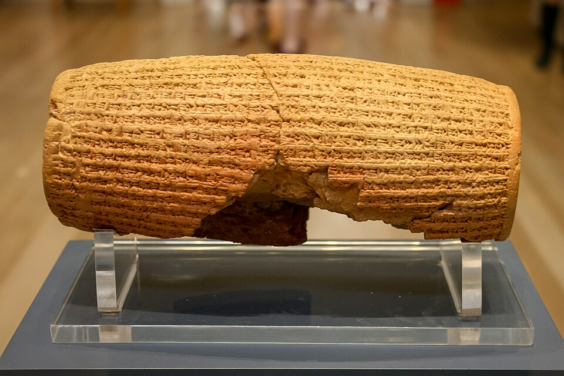
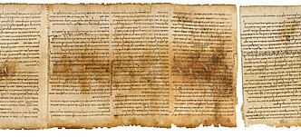
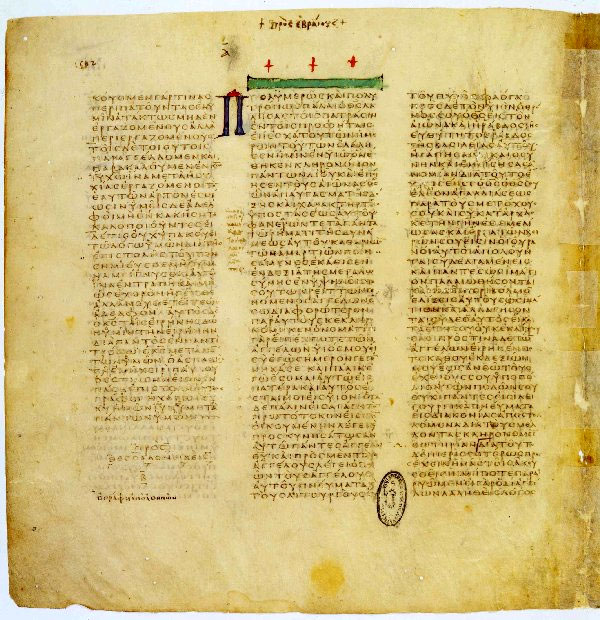
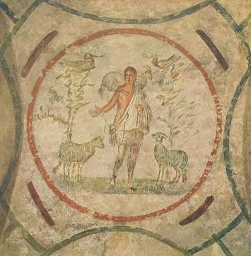
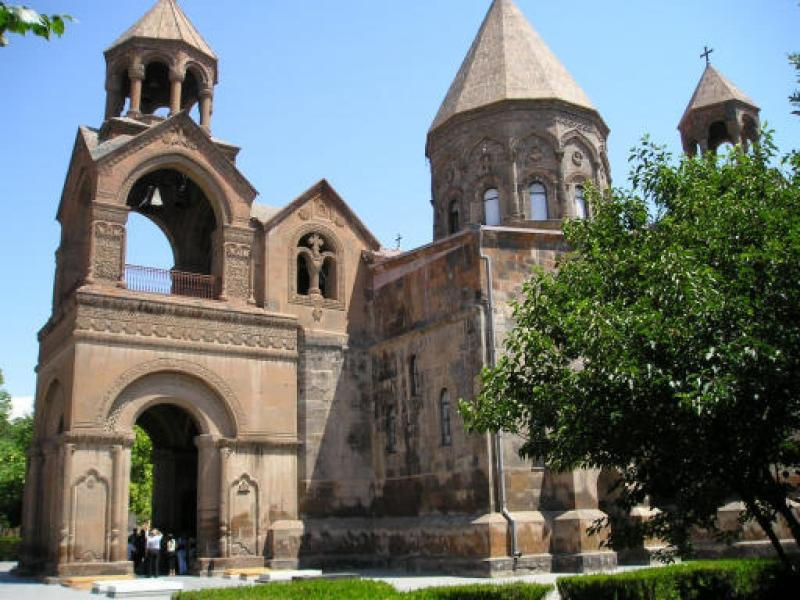
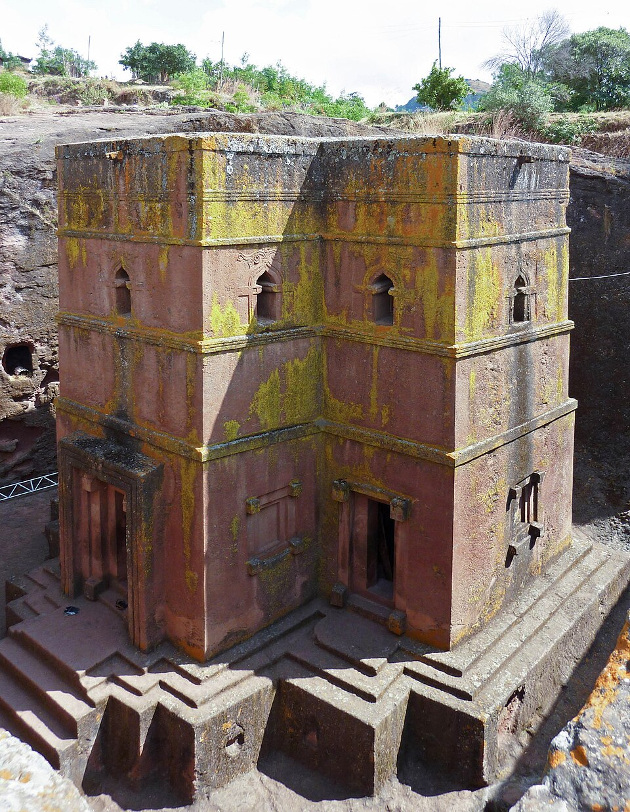
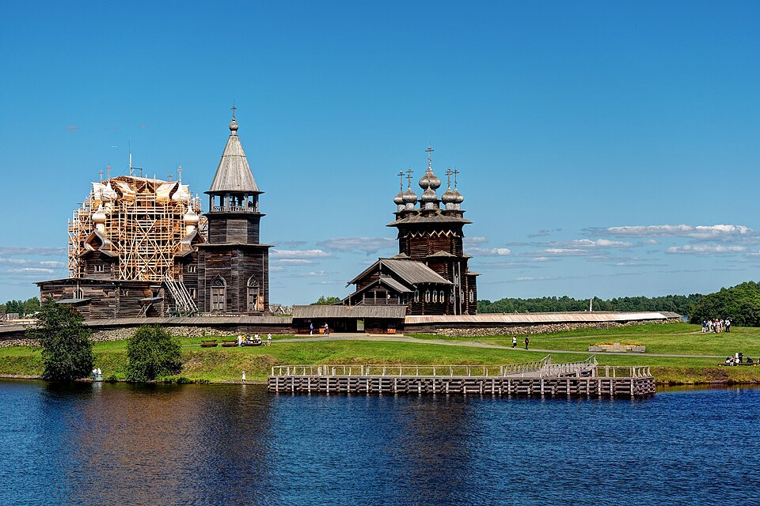
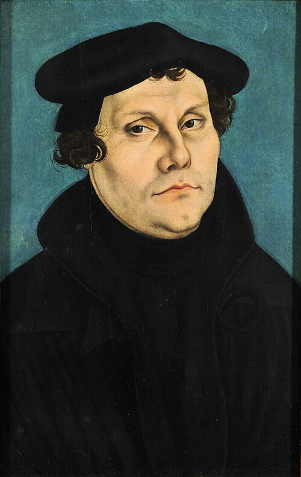

Explore
Family tree
The time axis is compressed, not to scale. Lines show historical lineage only and imply no theological judgment. Hollow nodes are independent movements not formed by a schism from one parent. Tap or click any node to open its entry. If pan and zoom are awkward, switch to the outline list.
Drag to move · Ctrl/⌘ + scroll or pinch to zoom
Ancient Israelite religion c. 1200–586 BCE 1
Formation of the Hebrew Bible c. 8th–2nd c. BCE (texts); canon later 1
Babylonian exile 587/586–538 BCE 1
Persian period & Second Temple 538 BCE – c. 515 BCE (Temple rebuilt) 3
Hellenistic Judaism & the Septuagint 3rd–2nd century BCE 1
- Philo of Alexandria c. 20 BCE – c. 50 CE
Jewish apocalyptic movements c. 3rd century BCE – 2nd century CE 1
John the Baptist c. 28–29 CE (ministry) 1
Historical Jesus within Judaism c. 4 BCE – c. 30/33 CE 2
Early / Apostolic Church c. 30–33 CE 3
Armenian Apostolic Church c. 300 (traditional date 301) 1
First Council of Nicaea (unifying event) May–July 325 10
- Georgian Orthodox Church 4th century (St Nino)
Ecumenical Patriarchate of Constantinople 4th century (rank 381/451) 6
- Bulgarian Orthodox Church 870; patriarchate 1953
Russian Orthodox Church 988; patriarchate 1589 4
- Old Believers 1666–67
- Russian Orthodox Church Outside Russia 1920s; reunited 2007
- Orthodox Church of the Czech Lands and Slovakia 1951; Constantinople 1998
- Orthodox Church in America 1970
- Church of Greece 1833; recognized 1850
- Polish Orthodox Church 1924; reaffirmed 1948
- Orthodox Church of Albania 1920s movement; recognized 1937
- Orthodox Church of Ukraine 2018; tomos 2019
- Church of Cyprus 431 (autocephaly)
Church of the East (Assyrian) 5th century (431 conventional) 3
- Chaldean Catholic Church 1550s (union with Rome under Yohannan Sulaqa)
- Ancient Church of the East 1968
- Assyrian Church of the East name adopted 1976
- Greek Orthodox Patriarchate of Alexandria ancient; Chalcedonian line after 451
Greek Orthodox Patriarchate of Antioch ancient; Chalcedonian line after 451 1
- Greek Orthodox Patriarchate of Jerusalem 451 (patriarchal status)
Oriental Orthodox communion after 451 2
Coptic Orthodox Church apostolic tradition; separate after 451 1
Syriac Orthodox Church after 451; hierarchy 6th century 3
- Syriac Catholic Church 1782
- Mar Thoma Syrian Church reform movement from 1836; independent church from 1888
Malankara Orthodox Syrian Church (India) 1912 (Catholicate) 1
Eastern Orthodox 1054 (symbolic) 5
- Serbian Orthodox Church 1219
- Ukrainian Greek Catholic Church 1595–96 (Union of Brest)
- Ruthenian Greek Catholic Church 1646 (Union of Uzhhorod)
- Romanian Greek Catholic Church 1700
- Romanian Orthodox Church 1885; patriarchate 1925
Roman Catholic 1054 (as distinct communion) 14
- Waldensians c. 1170s; condemned 1184
- Maronite Church Syriac Antiochene; union affirmed 1182
Hussites 1415 (death of Hus) 1
- Moravian Church (Unitas Fratrum) 1457; renewed 1727
Lutheran 1517 11
Church of Sweden 1527; Uppsala Synod 1593 1
- Evangelical Lutheran Church of Finland 16th century
- Church of Denmark 1536
- Church of Norway 1530s; officially accepted 1539
- Lutheran Church–Missouri Synod 1847
- Wisconsin Evangelical Lutheran Synod 1850
- Batak Christian Protestant Church (HKBP) 1861
- Evangelical Covenant Church 1885
- Evangelical Church in Germany (EKD) 1945
- Ethiopian Evangelical Church Mekane Yesus 1959
- Evangelical Lutheran Church in Tanzania 1938 federation; merged 1963
- Evangelical Lutheran Church in America (ELCA) 1988
Reformed (Continental) 1520s–1540s 10
Anabaptist (Swiss Brethren) 21 Jan 1525 4
- Hutterites c. 1528–1530s
Mennonites 1530s 4
- Amish 1693
- Brethren in Christ Church c. 1750s–1780s (River Brethren); name adopted 1863
- Mennonite Brethren 1860
- Mennonite Church USA 2002
- Church of the Brethren 1708
- Bruderhof 1920
- Reformed Church of France (Huguenots) 1559
Presbyterian 1560 8
Church of Scotland 1560 1
- Free Church of Scotland 1843 (Disruption)
Catholic Apostolic Church 1830s 1
- New Apostolic Church 1863
Restoration Movement (Stone–Campbell) 1832 (merger) 3
- Churches of Christ recognized 1906
- Independent Christian Churches (Stone–Campbell) 1927 (NACC)
- Christian Church (Disciples of Christ) 1968 (restructure)
- Presbyterianism in South Korea 1884–85 onward
Fundamentalism 1910–1915 1
Evangelicalism (neo-evangelical) 18th-c. roots; NAE 1942 2
- Messianic Judaism 1960s–70s
- Non-denominational churches mid-20th century onward
- Orthodox Presbyterian Church 1936
- Presbyterian Church in America 1973
- Presbyterian Church (USA) 1983
- Polish Brethren 1560s
- Reformed Church in Hungary 1567
- Unitarianism (Transylvania) 1568
Congregationalist late 16th century 2
Baptist 1609 8
General Baptists 1609 1
- Free Will Baptists 1727
- Particular / Reformed Baptists 1630s; confession 1644
- Seventh Day Baptists 1650s
- Baptist Union of Great Britain 1813
- Primitive Baptists 1832 (Black Rock Address)
- American Baptist Churches USA 1907
- United Church of Christ (USA) 1957
- Uniting Reformed Church in Southern Africa 1994
- Protestant Church in the Netherlands 2004 (merger)
Anglican / Episcopal 1534 5
Church of England 597 / 1534 6
- Scottish Episcopal Church 1689 (disestablishment)
- Episcopal Church (USA) 1789
- Church in Wales 1920 (disestablishment)
- Church of Uganda 1961
- Anglican Church of Kenya 1970
- Church of Nigeria 1979
Quakers (Religious Society of Friends) c. 1647–1652 1
- Shakers 1747; to America 1774
Methodist 1738 (Aldersgate); 1784 (US church) 11
- African Methodist Episcopal (AME) 1816
- AME Zion 1821
- Free Methodist Church 1860
- The Salvation Army 1865
Holiness movement mid-19th century 5
- Church of God (Anderson, Indiana) 1881
- Church of God (Cleveland, Tennessee) 1886
- Christian and Missionary Alliance 1887
Pentecostalism 1901–1906 14
- Church of God in Christ 1897; Pentecostal 1907
- Assembleias de Deus (Brazil) 1911
- International Pentecostal Holiness Church 1911
Oneness Pentecostalism 1913–1916 2
- Pentecostal Assemblies of the World c. 1906–1916 (sources differ)
- United Pentecostal Church International 1945
Assemblies of God 1914 2
- Yoido Full Gospel Church 1958
- Hillsong Church 1983
- Elim Pentecostal Church 1915
Apostolic Church 1916 1
- Church of Pentecost (Ghana) 1953 (name 1962)
- True Jesus Church 1917
- Pentecostal Assemblies of Canada 1919
- Foursquare Church 1923; incorporated 1927
- Redeemed Christian Church of God 1952
Charismatic renewal 1960s 1
Calvary Chapel 1965 1
- Vineyard Churches late 1970s–early 1980s
- Universal Church of the Kingdom of God 1977
- Living Faith Church Worldwide (Winners' Chapel) 1981
- Church of the Nazarene 1895 (Bresee); 1908 (union)
- Christian Methodist Episcopal Church 1870
- Korean Methodist Church 1930
- Methodist Church of Great Britain 1932
- United Methodist Church 1968
- Wesleyan Church 1843; merger 1968
- Global Methodist Church 1 May 2022
Plymouth Brethren 1820s–1831 1
- Exclusive Brethren 1840s (division among the Brethren)
- Anglican Church in North America (ACNA) 2009
- Council of Trent 1545–1563
- Eastern Catholic Churches (23) various (e.g., Union of Brest 1595–96)
Old Catholic Churches 1870; Union of Utrecht 1889 2
- Independent Catholicism 19th–20th centuries
- Liberal Catholic Church 1916
- Polish National Catholic Church 1897
- Philippine Independent Church (Aglipayan) 1902
- Syro-Malabar Church hierarchy 1923
Second Vatican Council 11 Oct 1962 – 8 Dec 1965 2
- Sedevacantism after 1965
- Society of St Pius X (SSPX) 1970
- Personal Ordinariates (former Anglicans) 2009
Ethiopian Orthodox Tewahedo Church 4th century 1
- Eritrean Orthodox Tewahedo Church 1993/1994
- Parting of the ways (Judaism and Christianity) c. 70–4th century CE
Maccabean Revolt & Hasmoneans 167–160 BCE 3
- Essenes & Dead Sea Scrolls c. 2nd century BCE – 1st century CE (scrolls found 1947)
Pharisees c. 2nd century BCE – 1st century CE 1
- Sadducees c. 2nd century BCE – 70 CE
- Zoroastrianism (debated influence) Persian era
Greco-Roman religion & philosophy c. 5th century BCE – 4th century CE 1
- Mystery cults Hellenistic & Roman eras
Universalism (US) from 1770 (John Murray in New England) 1
- New Church (Swedenborgian) c. 1788 (first New Church worship building, London)
- Churches of God General Conference 1825–1830
Latter-day Saints 6 April 1830 1
- Community of Christ 1860
- Christadelphians 1848
- Seventh-day Adventist 1863
- Jehovah's Witnesses 1870s; name 1931
- Christian Science 1879
- Nazareth Baptist Church (Shembe) 1910
- Harrist Church 1913–14 (Harris's mission)
- Iglesia ni Cristo 1914
Aladura movement from 1918 3
- Cherubim and Seraphim 1925
- Church of the Lord (Aladura) 1930
- Christ Apostolic Church 1940 split; registered May 1943
- Kimbanguist Church 1921
- Local churches (Little Flock) 1922
- Zion Christian Church 1924/1925
- United Church of Canada 1925
- Grace Communion International 1933
- Celestial Church of Christ 1947
- Church of South India 1947
- Chinese house churches 1950s onward
- Three-Self Patriotic Movement 1954
- Church of North India 1970
- Uniting Church in Australia 1977
⚠ On certainty: dates for ancient events and for gradual processes are scholarly estimates or conventions. Each entry's “certainty” note says whether a date is firm, approximate, traditional or debated. Founding stories passed down within a church (for example apostolic founders) are labeled as tradition.
Loading…
Loading…
Loading…
Loading…
Loading…
Loading…
Loading…
Images
Gallery
Public-domain and Creative Commons images from Wikimedia Commons. The license shown for each was read from the Commons file record.

Photograph by Mike Peel (www.mikepeel.net). · CC BY-SA 4.0 (license) · Wikimedia Commons

Unknown author · Public domain · Wikimedia Commons
Berthold Werner · Public domain · Wikimedia Commons

Unknown author · Public domain · Wikimedia Commons
Unknown author (icon, Megalo Meteoro Monastery) · Public domain · Wikimedia Commons
Unknown author · Public domain · Wikimedia Commons

Wilpert, Joseph (1857—1944) · Public domain · Wikimedia Commons

Author of the photo is Heretiq · Public domain · Wikimedia Commons

Bernard Gagnon · CC BY-SA 3.0 (license) · Wikimedia Commons
Arild Vågen · CC BY-SA 3.0 (license) · Wikimedia Commons

Alexxx1979 · CC BY-SA 4.0 (license) · Wikimedia Commons

Lucas Cranach the Elder · Public domain · Wikimedia Commons
Alvesgaspar · CC BY-SA 4.0 (license) · Wikimedia Commons
Romzig · CC0 (license) · Wikimedia Commons
Michael D Beckwith · CC0 (license) · Wikimedia Commons
After George Romney (file page notes a third-party copyright claim on the reproduction) · Public domain · Wikimedia Commons
Christianity by the numbers
| Tradition | Pew (2010 data, 2011 report) | Gordon-Conwell 2025 estimate |
|---|---|---|
| Catholic | 50% | ~1.27 billion |
| Protestant | 37% (broad) | ~629 million Protestants + ~409 million Independents |
| Orthodox | 12% | ~292 million |
| Other | 1% | — |
| All Christians | Pew: ~2.3 billion (2020) [320]; Gordon-Conwell: ~2.65 billion (2025) [204] [152] | |
Method & remaining uncertainties
- No Wikipedia (or other open wiki) pages are cited. Each entry's dates and key names were checked by script against the live text of its cited sources (retrieved 18–20 Oct 2026): Encyclopaedia Britannica, World Council of Churches member-church profiles, official church histories, the Catholic Encyclopedia (for historical Catholic claims), the Dictionary of African Christian Biography, university and academic resources, Bible Odyssey (SBL), the Stanford Encyclopedia of Philosophy, Encyclopaedia Iranica, the Israel Antiquities Authority and the Jewish Encyclopedia. Where a claim could not be confirmed it was softened or removed and flagged in the entry's note. Official church sites state each body's own account of its origins.
- Debated: Zoroastrian influence on Judaism; the dating of Hebrew Bible texts and the closing of the canon; how much mystery cults and philosophy shaped Christianity; whether the Qumran community was Essene; when Judaism and Christianity parted.
- Contested status: the Orthodox Church in America's autocephaly, the Orthodox Church of Ukraine, the SSPX's canonical standing, and whether nontrinitarian and Restorationist groups count as Christian (included following Pew's “other Christian” category). Messianic Judaism is not regarded as Judaism by most Jewish bodies.
- Dating varies by source for the Pentecostal Assemblies of the World (Britannica gives both 1906 and 1916), the Hutterites (late 1520s vs c. 1530) and the Holiness movement (1867 is a placement year only). Several founders often named elsewhere (e.g., Felix Manz, John Inskip, Dennis Bennett, Orange Scott, E. N. Bell) were removed because the sources checked here do not name them.
- Membership figures are given only when a checked source states them.
References
Bibliography
Links tested 19 Oct 2026. Entries marked * blocked automated checks (HTTP 403/429) but load in a normal browser (Britannica pages were read via a fetch tool).
- Encyclopaedia Britannica, “Yahweh” https://www.britannica.com/topic/Yahweh
- Bible Odyssey (Society of Biblical Literature), “Monotheism in the Hebrew Bible” https://www.bibleodyssey.org/articles/monotheism-in-the-hebrew-bible/
- Bible Odyssey (SBL), “Yahweh” https://www.bibleodyssey.org/articles/yahweh/
- Encyclopaedia Britannica, “Biblical literature - Old Testament, Canon, Versions” https://www.britannica.com/topic/biblical-literature/Old-Testament-canon-texts-and-versions
- Bible Odyssey (SBL), “Three Biblical Canons” https://www.bibleodyssey.org/articles/three-biblical-canons/
- Encyclopaedia Britannica, “Babylonian Captivity” https://www.britannica.com/event/Babylonian-Captivity
- Bible Odyssey (SBL), Bob Becking, “Babylonian Exile” https://www.bibleodyssey.org/articles/babylonian-exile/
- Encyclopaedia Britannica, “Zoroastrianism” https://www.britannica.com/topic/Zoroastrianism
- Encyclopaedia Iranica, “Zoroastrianism i. Historical Review up to the Arab Conquest” https://www.iranicaonline.org/articles/zoroastrianism-i-historical-review
- Encyclopaedia Britannica, “Judaism” https://www.britannica.com/topic/Judaism
- Bible Odyssey (SBL), “The Persian Period” https://www.bibleodyssey.org/articles/the-persian-period/
- Bible Odyssey (SBL), “The Second Temple” https://www.bibleodyssey.org/articles/the-second-temple/
- Encyclopaedia Britannica, “Platonism” https://www.britannica.com/topic/Platonism
- Stanford Encyclopedia of Philosophy, “Plato” https://plato.stanford.edu/entries/plato/
- Stanford Encyclopedia of Philosophy, “Stoicism” https://plato.stanford.edu/entries/stoicism/
- Encyclopaedia Britannica, “Mystery religion” https://www.britannica.com/topic/mystery-religion
- Encyclopaedia Britannica, “Septuagint” https://www.britannica.com/topic/Septuagint
- Bible Odyssey (SBL), “What Is the Septuagint?” https://www.bibleodyssey.org/articles/what-is-the-septuagint/
- Encyclopaedia Britannica, “Apocalyptic literature” https://www.britannica.com/art/apocalyptic-literature
- Bible Odyssey (SBL), “What Is an Apocalypse?” https://www.bibleodyssey.org/articles/what-is-an-apocalypse/
- Encyclopaedia Britannica, “Mattathias” https://www.britannica.com/biography/Mattathias
- Bible Odyssey (SBL), “Maccabees” https://www.bibleodyssey.org/articles/maccabees/
- Encyclopaedia Britannica, “Dead Sea Scrolls” https://www.britannica.com/topic/Dead-Sea-Scrolls
- Bible Odyssey (SBL), “The Dead Sea Scrolls Community” https://www.bibleodyssey.org/articles/the-dead-sea-scrolls-community/
- Israel Antiquities Authority, Leon Levy Dead Sea Scrolls Digital Library, “Introduction” https://www.deadseascrolls.org.il/learn-about-the-scrolls/introduction
- Jewish Encyclopedia (1906), “Essenes” https://www.jewishencyclopedia.com/articles/5867-essenes
- Encyclopaedia Britannica, “Pharisee” https://www.britannica.com/topic/Pharisee
- Bible Odyssey (SBL), “Pharisees” https://www.bibleodyssey.org/articles/pharisees/
- Jewish Encyclopedia (1906), “Pharisees” https://www.jewishencyclopedia.com/articles/12087-pharisees
- Encyclopaedia Britannica, “Sadducee” https://www.britannica.com/topic/Sadducee
- Bible Odyssey (SBL), “Sadducees” https://www.bibleodyssey.org/articles/sadducees/
- Jewish Encyclopedia (1906), “Sadducees” https://www.jewishencyclopedia.com/articles/12989-sadducees
- Encyclopaedia Britannica, “Philo Judaeus” https://www.britannica.com/biography/Philo-Judaeus
- Stanford Encyclopedia of Philosophy, “Philo of Alexandria” https://plato.stanford.edu/entries/philo/
- Encyclopaedia Britannica, “Jesus” https://www.britannica.com/biography/Jesus
- PBS Frontline, From Jesus to Christ, “Jews and the Roman Empire” https://www.pbs.org/wgbh/pages/frontline/shows/religion/portrait/jews.html
- Encyclopaedia Britannica, “St. John the Baptist” https://www.britannica.com/biography/Saint-John-the-Baptist
- Bible Odyssey (SBL), “John the Baptist” https://www.bibleodyssey.org/articles/john-the-baptist/
- Encyclopaedia Britannica, “History of early Christianity” https://www.britannica.com/topic/history-of-early-Christianity
- Encyclopaedia Britannica, “Siege of Jerusalem” https://www.britannica.com/event/Siege-of-Jerusalem-70
- Bible Odyssey (Society of Biblical Literature) https://www.bibleodyssey.org/articles/the-jewish-revolts-from-rome/
- Encyclopaedia Britannica, “Armenian Apostolic Church” https://www.britannica.com/topic/Armenian-Apostolic-Church
- Armenian Church (Eastern Diocese of America) https://www.armenianchurch.org/
- Encyclopaedia Britannica, “First Council of Nicaea” https://www.britannica.com/event/First-Council-of-Nicaea-325
- Encyclopaedia Britannica, “Georgian Orthodox church” https://www.britannica.com/topic/Georgian-Orthodox-church
- Encyclopaedia Britannica, “Ethiopian Orthodox Tewahedo Church” https://www.britannica.com/topic/Ethiopian-Orthodox-Tewahedo-Church
- Ethiopian Orthodox Tewahedo Church, official site https://www.ethiopianorthodox.org/
- Encyclopaedia Britannica, “Ecumenical Patriarchate of Constantinople” https://www.britannica.com/topic/Ecumenical-Patriarchate-of-Constantinople
- Ecumenical Patriarchate, official site https://ec-patr.org/
- Encyclopaedia Britannica, “Church of Cyprus” https://www.britannica.com/topic/Church-of-Cyprus
- Encyclopaedia Britannica, “Nestorianism” https://www.britannica.com/topic/Nestorianism
- Encyclopaedia Britannica, “Coptic Orthodox Church of Alexandria” https://www.britannica.com/topic/Coptic-Orthodox-Church-of-Alexandria
- Coptic Orthodox Church, official site https://copticorthodox.church/
- Encyclopaedia Britannica, “Greek Orthodox Patriarchate of Alexandria” https://www.britannica.com/topic/Greek-Orthodox-Patriarchate-of-Alexandria
- World Council of Churches, member church profile: Greek Orthodox Patriarchate of Antioch and All the East https://www.oikoumene.org/member-churches/greek-orthodox-patriarchate-of-antioch-and-all-the-east
- Encyclopaedia Britannica, “Christianity - Eastern Churches, Orthodoxy, Catholicism” https://www.britannica.com/topic/Christianity/The-Eastern-churches
- Encyclopaedia Britannica, “Greek Orthodox Patriarchate of Jerusalem” https://www.britannica.com/topic/Greek-Orthodox-Patriarchate-of-Jerusalem
- World Council of Churches, member churches https://www.oikoumene.org/member-churches
- Encyclopaedia Britannica, “Syriac Orthodox Patriarchate of Antioch and All the East” https://www.britannica.com/topic/Syriac-Orthodox-Patriarchate-of-Antioch-and-All-the-East
- Syriac Orthodox Patriarchate of Antioch https://syriacpatriarchate.org/
- Encyclopaedia Britannica, “Bulgarian Orthodox Church” https://www.britannica.com/topic/Bulgarian-Orthodox-Church
- Encyclopaedia Britannica, “Russian Orthodox Church” https://www.britannica.com/topic/Russian-Orthodox-Church
- Encyclopaedia Britannica, “Eastern Orthodoxy” https://www.britannica.com/topic/Eastern-Orthodoxy
- Paul VI & Athenagoras I, Joint Catholic–Orthodox Declaration (7 Dec 1965) https://www.vatican.va/content/paul-vi/en/speeches/1965/documents/hf_p-vi_spe_19651207_common-declaration.html
- Encyclopaedia Britannica, “Roman Catholicism” https://www.britannica.com/topic/Roman-Catholicism
- Holy See, official site https://www.vatican.va/
- Encyclopaedia Britannica, “Waldenses” https://www.britannica.com/topic/Waldenses
- World Council of Churches, member church profile: Waldensian Church https://www.oikoumene.org/member-churches/waldensian-church
- Encyclopaedia Britannica, “Waldenses” https://www.britannica.com/topic/Waldenses
- Chiesa Evangelica Valdese, official site https://www.chiesavaldese.org/
- Encyclopaedia Britannica, “Maronite church” https://www.britannica.com/topic/Maronite-church
- Encyclopaedia Britannica, “Serbian Orthodox Church” https://www.britannica.com/topic/Serbian-Orthodox-Church
- Encyclopaedia Britannica, “Hussite” https://www.britannica.com/topic/Hussite
- Encyclopaedia Britannica, “Moravian church” https://www.britannica.com/topic/Moravian-church
- World Council of Churches, member church profile: Moravian Church in America https://www.oikoumene.org/member-churches/moravian-church-in-america
- Moravian Church in America (official) https://www.moravian.org/2018/07/a-brief-history-of-the-moravian-church/
- Moravian Church in North America https://www.moravian.org/
- Encyclopaedia Britannica, “Lutheranism” https://www.britannica.com/topic/Lutheranism
- Lutheran World Federation https://lutheranworld.org/
- Encyclopaedia Britannica, “Reformed and Presbyterian churches” https://www.britannica.com/topic/Presbyterian-churches
- World Communion of Reformed Churches https://wcrc.eu/
- Encyclopaedia Britannica, “Anabaptist” https://www.britannica.com/topic/Anabaptists
- Encyclopaedia Britannica, “Anabaptist” https://www.britannica.com/topic/Anabaptists
- Mennonite World Conference https://mwc-cmm.org/
- Encyclopaedia Britannica, “Church of Sweden” https://www.britannica.com/topic/Church-of-Sweden
- World Council of Churches, member church profile: Church of Sweden https://www.oikoumene.org/member-churches/church-of-sweden
- Encyclopaedia Britannica, “Church of Finland” https://www.britannica.com/topic/Church-of-Finland
- Encyclopaedia Britannica, “Hutterite” https://www.britannica.com/topic/Hutterites
- Hutterian Brethren, official site https://www.hutterites.org/
- Encyclopaedia Britannica, “Anglican Communion” https://www.britannica.com/topic/Anglican-Communion
- Anglican Communion, official site https://www.anglicancommunion.org/
- Encyclopaedia Britannica, “Church of England” https://www.britannica.com/topic/Church-of-England
- Encyclopaedia Britannica, “Evangelical Lutheran Church of Denmark” https://www.britannica.com/topic/Evangelical-Lutheran-Church-of-Denmark
- Encyclopaedia Britannica, “Mennonite” https://www.britannica.com/topic/Mennonite
- Encyclopaedia Britannica, “Church of Norway” https://www.britannica.com/topic/Church-of-Norway
- World Council of Churches, member church profile: Church of Norway https://www.oikoumene.org/member-churches/church-of-norway
- Encyclopaedia Britannica, “Council of Trent” https://www.britannica.com/event/Council-of-Trent
- Encyclopaedia Britannica, “Chaldean Catholic Church” https://www.britannica.com/topic/Chaldean-Catholic-Church
- Catholic Encyclopedia (1908–1912), via New Advent https://www.newadvent.org/cathen/03559a.htm
- Oxford University Research Archive (English Historical Review article) https://ora.ox.ac.uk/objects/uuid:b0ce9089-bd49-4394-8a7d-736326644246
- Encyclopaedia Britannica, “Reformed Church of France” https://www.britannica.com/topic/Reformed-Church-of-France
- Encyclopaedia Britannica, “Church of Scotland” https://www.britannica.com/topic/Church-of-Scotland
- Encyclopaedia Britannica, “Minor Reformed Church” https://www.britannica.com/topic/Minor-Reformed-Church
- Encyclopaedia Britannica, “Socinian” https://www.britannica.com/topic/Socinians
- Encyclopaedia Britannica, “Reformed Church in Hungary” https://www.britannica.com/topic/Reformed-Church-in-Hungary
- Encyclopaedia Britannica, “Unitarianism and Universalism” https://www.britannica.com/topic/Unitarianism
- Encyclopaedia Britannica, “Congregationalism” https://www.britannica.com/topic/Congregationalism
- United Church of Christ (US Congregational heritage) https://www.ucc.org/
- Encyclopaedia Britannica, “Eastern rite church” https://www.britannica.com/topic/Eastern-rite-church
- Encyclopaedia Britannica, “Baptist - History” https://www.britannica.com/topic/Baptist/History
- Encyclopaedia Britannica, “Baptist” https://www.britannica.com/topic/Baptist
- Baptist World Alliance https://baptistworld.org/
- Encyclopaedia Britannica, “Reformed Church in America” https://www.britannica.com/topic/Reformed-Church-in-America
- World Council of Churches, member church profile: Reformed Church in America https://www.oikoumene.org/member-churches/reformed-church-in-america
- Baptist Historical Society (UK) https://www.baptisthistory.org.uk/Groups/404874/17th_Century.aspx
- Encyclopaedia Britannica, “Ruthenian Catholic Church” https://www.britannica.com/topic/Ruthenian-Catholic-Church
- Encyclopaedia Britannica, “Seventh Day Baptist” https://www.britannica.com/topic/Seventh-Day-Baptist
- Seventh Day Baptist General Conference (official) https://www.seventhdaybaptist.org/about-us/
- Encyclopaedia Britannica, “Society of Friends” https://www.britannica.com/topic/Society-of-Friends
- Quakers in Britain, official site https://www.quaker.org.uk/
- Encyclopaedia Britannica, “Old Believer” https://www.britannica.com/topic/Old-Believers
- Encyclopaedia Britannica, “Episcopal Church in Scotland” https://www.britannica.com/topic/Episcopal-Church-in-Scotland
- Encyclopaedia Britannica, “Amish” https://www.britannica.com/topic/Amish
- Encyclopaedia Britannica, “Roman Catholic Church of Romania” https://www.britannica.com/topic/Roman-Catholic-Church-of-Romania
- Encyclopaedia Britannica, “Brethren” https://www.britannica.com/topic/Brethren
- World Council of Churches, member church profile: Church of the Brethren https://www.oikoumene.org/member-churches/church-of-the-brethren
- Encyclopaedia Britannica, “Melchite” https://www.britannica.com/topic/Melchites
- Catholic Encyclopedia (1908–1912), via New Advent https://www.newadvent.org/cathen/10157b.htm
- Encyclopaedia Britannica, “National Association of Free Will Baptists” https://www.britannica.com/topic/National-Association-of-Free-Will-Baptists
- Encyclopaedia Britannica, “Methodism” https://www.britannica.com/topic/Methodism
- World Methodist Council https://worldmethodistcouncil.org/
- Encyclopaedia Britannica, “Armenian Catholic Church” https://www.britannica.com/topic/Armenian-Catholic-Church
- Encyclopaedia Britannica, “Coptic Catholic Church” https://www.britannica.com/topic/Coptic-Catholic-Church
- Encyclopaedia Britannica, “Shaker” https://www.britannica.com/topic/Shakers
- Encyclopaedia Britannica, “Universalism” https://www.britannica.com/topic/Universalism
- Encyclopaedia Britannica, “Brethren in Christ” https://www.britannica.com/topic/Brethren-in-Christ
- Encyclopaedia Britannica, “Syrian Catholic Church” https://www.britannica.com/topic/Syrian-Catholic-Church
- Encyclopaedia Britannica, “New Church” https://www.britannica.com/topic/New-Church
- Encyclopaedia Britannica, “The Episcopal Church” https://www.britannica.com/topic/The-Episcopal-Church
- Encyclopaedia Britannica, “Baptist Union of Great Britain” https://www.britannica.com/topic/Baptist-Union-of-Great-Britain
- World Council of Churches, member church profile: Baptist Union of Great Britain https://www.oikoumene.org/member-churches/baptist-union-of-great-britain
- Baptist Union of Great Britain (official) https://www.baptist.org.uk/Groups/220596/Baptist_History.aspx
- Encyclopaedia Britannica, “African Methodist Episcopal Church (AME Church)” https://www.britannica.com/topic/African-Methodist-Episcopal-Church
- African Methodist Episcopal Church, official site https://www.ame-church.com/
- Encyclopaedia Britannica, “African Methodist Episcopal Zion Church” https://www.britannica.com/topic/African-Methodist-Episcopal-Zion-Church
- AME Zion Church, official site https://www.amezion.org/
- Encyclopaedia Britannica, “Plymouth Brethren” https://www.britannica.com/topic/Plymouth-Brethren
- Encyclopaedia Britannica, “John Nelson Darby” https://www.britannica.com/biography/John-Nelson-Darby
- Churches of God, General Conference (official) https://cggc.org/about-us/our-history/
- Encyclopaedia Britannica, “Church of Jesus Christ of Latter-day Saints (LDS)” https://www.britannica.com/topic/Church-of-Jesus-Christ-of-Latter-day-Saints
- The Church of Jesus Christ of Latter-day Saints, official site https://www.churchofjesuschrist.org/
- Pew Research Center (2011), “Global Christianity: Christian Traditions” https://www.pewresearch.org/religion/2011/12/19/global-christianity-traditions/
- Encyclopaedia Britannica, “Catholic Apostolic Church” https://www.britannica.com/topic/Catholic-Apostolic-Church
- Encyclopaedia Britannica, “Primitive Baptist” https://www.britannica.com/topic/Primitive-Baptists
- Primitive Baptist church (text of the Black Rock Address) https://pbokc.org/blackrock/
- Encyclopaedia Britannica, “Alexander Campbell” https://www.britannica.com/biography/Alexander-Campbell-American-clergyman
- Encyclopaedia Britannica, “Church of Greece” https://www.britannica.com/topic/Church-of-Greece
- Encyclopaedia Britannica, “Thomas Christians” https://www.britannica.com/topic/Thomas-Christians
- Encyclopaedia Britannica, “Thomas Christians - Indianization, Reformation, Syncretism” https://www.britannica.com/topic/Thomas-Christians/Later-developments
- World Council of Churches, member church profile: Mar Thoma Syrian Church of Malabar https://www.oikoumene.org/member-churches/mar-thoma-syrian-church-of-malabar
- Encyclopaedia Britannica, “Free Church of Scotland” https://www.britannica.com/topic/Free-Church-of-Scotland
- Encyclopaedia Britannica, “Southern Baptist Convention (SBC)” https://www.britannica.com/topic/Southern-Baptist-Convention
- Southern Baptist Convention, official site https://www.sbc.net/
- Encyclopaedia Britannica, “Lutheran Church–Missouri Synod” https://www.britannica.com/topic/Lutheran-Church-Missouri-Synod
- Encyclopaedia Britannica, “Christadelphian” https://www.britannica.com/topic/Christadelphians
- Encyclopaedia Britannica, “Exclusive Brethren” https://www.britannica.com/topic/Exclusive-Brethren
- Encyclopaedia Britannica, “Wisconsin Evangelical Lutheran Synod” https://www.britannica.com/topic/Wisconsin-Evangelical-Lutheran-Synod
- Encyclopaedia Britannica, “Christian Reformed Church in North America” https://www.britannica.com/topic/Christian-Reformed-Church-in-North-America
- Encyclopaedia Britannica, “Community of Christ” https://www.britannica.com/topic/Community-of-Christ
- Encyclopaedia Britannica, “Free Methodist Church of North America” https://www.britannica.com/topic/Free-Methodist-Church-of-North-America
- Encyclopaedia Britannica, “Batak Protestant Christian Church” https://www.britannica.com/topic/Batak-Protestant-Christian-Church
- World Council of Churches, member church profile: Protestant Christian Batak Church https://www.oikoumene.org/member-churches/protestant-christian-batak-church
- Encyclopaedia Britannica, “New Apostolic Church” https://www.britannica.com/topic/New-Apostolic-Church
- Encyclopaedia Britannica, “Adventist” https://www.britannica.com/topic/Adventism
- Seventh-day Adventist Church, official site https://www.adventist.org/
- Encyclopaedia Britannica, “Salvation Army” https://www.britannica.com/topic/Salvation-Army
- The Salvation Army International https://www.salvationarmy.org/
- Encyclopaedia Britannica, “Holiness movement” https://www.britannica.com/event/Holiness-movement
- Encyclopaedia Britannica, “Christian Methodist Episcopal Church” https://www.britannica.com/topic/Christian-Methodist-Episcopal-Church
- Encyclopaedia Britannica, “Old Catholic church” https://www.britannica.com/topic/Old-Catholic-church
- Union of Utrecht of the Old Catholic Churches https://www.utrechter-union.org/
- Encyclopaedia Britannica, “Jehovah’s Witness” https://www.britannica.com/topic/Jehovahs-Witnesses
- Encyclopaedia Britannica, “Jehovah’s Witness” (J. Gordon Melton) https://www.britannica.com/topic/Jehovahs-Witnesses
- Jehovah’s Witnesses, official site https://www.jw.org/
- Encyclopaedia Britannica, “Christian Science” https://www.britannica.com/topic/Christian-Science
- Church of Christ, Scientist, official site https://www.christianscience.com/
- Encyclopaedia Britannica, “Church of God (Anderson, Indiana)” https://www.britannica.com/topic/Church-of-God-Anderson-Indiana
- Encyclopaedia Britannica, “Daniel Sidney Warner” https://www.britannica.com/biography/Daniel-Sidney-Warner
- Boston University, History of Missiology https://www.bu.edu/missiology/missionary-biography/t-u-v/underwood-horace-grant-1859-1916/
- UCLA Online Archive of Korean Christianity https://koreanchristianity.cdh.ucla.edu/chronology/open-port-period-1876-1910/
- Evangelical Covenant Church (official) https://covchurch.org/history/
- Encyclopaedia Britannica, “Romanian Orthodox Church” https://www.britannica.com/topic/Romanian-Orthodox-Church
- Encyclopaedia Britannica, “Church of God” https://www.britannica.com/topic/Church-of-God-American-Pentecostal-church
- Encyclopaedia Britannica, “Christian and Missionary Alliance” https://www.britannica.com/topic/Christian-and-Missionary-Alliance
- Encyclopaedia Britannica, “National Baptist Convention of the United States of America, Inc.” https://www.britannica.com/topic/National-Baptist-Convention-of-the-United-States-of-America-Inc
- National Baptist Convention, USA, Inc. https://www.nationalbaptist.com/
- Encyclopaedia Britannica, “Polish National Catholic Church” https://www.britannica.com/topic/Polish-National-Catholic-Church
- World Council of Churches, member church profile: Polish National Catholic Church https://www.oikoumene.org/member-churches/polish-national-catholic-church
- Encyclopaedia Britannica, “Philippine Independent Church” https://www.britannica.com/topic/Philippine-Independent-Church
- Encyclopaedia Britannica, “Church of Christ” https://www.britannica.com/topic/Church-of-Christ
- Encyclopaedia Britannica, “Pentecostalism” https://www.britannica.com/topic/Pentecostalism
- Encyclopaedia Britannica, “Pentecostalism” (J. Gordon Melton) https://www.britannica.com/topic/Pentecostalism
- Pentecostal World Fellowship https://pentecostalworldfellowship.org/
- Center for the Study of Global Christianity, Gordon-Conwell (2025), “Status of Global Christianity 2025” (PDF) https://www.gordonconwell.edu/center-for-global-christianity/research/wp-content/uploads/sites/13/2025/01/Status-of-Global-Christianity-2025.pdf
- Encyclopaedia Britannica, “American Baptist Churches USA” https://www.britannica.com/topic/American-Baptist-Churches-in-the-USA
- Encyclopaedia Britannica, “Church of God in Christ, Inc. (COGIC)” https://www.britannica.com/topic/Church-of-God-in-Christ-Inc
- Church of God in Christ, official site https://www.cogic.org/
- Encyclopaedia Britannica, “Church of the Nazarene” https://www.britannica.com/topic/Church-of-the-Nazarene
- Church of the Nazarene (official) https://nazarene.org/who-we-are/our-history
- Church of the Nazarene, official site https://nazarene.org/
- Encyclopaedia Britannica, “Christian fundamentalism - 19th-20th Century, Beliefs, Movements” https://www.britannica.com/topic/Christian-fundamentalism/The-late-19th-to-the-mid-20th-century
- Dictionary of African Christian Biography https://dacb.org/stories/southafrica/shembe2-isaiah/
- Assembleia de Deus (official) https://www.assembleia.org.br/historia
- Assembleia de Deus Belém (official) https://ad.org.br/113-anos-de-assembleia-de-deus-no-brasil/
- Encyclopaedia Britannica, “International Pentecostal Holiness Church (IPHC)” https://www.britannica.com/topic/International-Pentecostal-Holiness-Church
- World Council of Churches, member church profile: Malankara Orthodox Syrian Church https://www.oikoumene.org/member-churches/malankara-orthodox-syrian-church
- Malankara Orthodox Syrian Church, official site https://mosc.in/
- World Council of Churches, member church profile: Church of Christ - Harris Mission (Harrist Church) https://www.oikoumene.org/member-churches/church-of-christ-harris-mission-harrist-church
- Encyclopaedia Britannica, “Jesus Only” https://www.britannica.com/event/Jesus-Only
- United Pentecostal Church International https://www.upci.org/
- Encyclopaedia Britannica, “Assemblies of God” https://www.britannica.com/topic/Assemblies-of-God
- Assemblies of God USA, official site https://ag.org/
- Encyclopaedia Britannica, “Iglesia ni Cristo (INC)” https://www.britannica.com/topic/Iglesia-ni-Cristo
- World Council of Churches, member church profile: Nigerian Baptist Convention https://www.oikoumene.org/member-churches/nigerian-baptist-convention
- Elim Pentecostal Church (official) https://www.elim.org.uk/Groups/266414/Elim_Pentecostal_Church/About_Us/Our_History/Our_History.aspx
- Elim Pentecostal Church (official) https://www.elim.org.uk/Articles/417849/The_beginnings_of.aspx
- Dictionary of Welsh Biography (National Library of Wales) https://biography.wales/article/s2-WILL-POW-1882.html
- Encyclopaedia Britannica, “Liberal Catholic Church” https://www.britannica.com/topic/Liberal-Catholic-Church
- Liberal Catholic Church in Australia (official) https://www.liberalcatholicchurch.org.au/dbpage.php?pg=history
- Australian Dictionary of Biography (ANU) https://adb.anu.edu.au/biography/leadbeater-charles-webster-7132
- Encyclopaedia Britannica, “Pentecostal Assemblies of the World” https://www.britannica.com/topic/Pentecostal-Assemblies-of-the-World-Inc
- Encyclopaedia Britannica, “True Jesus Church” https://www.britannica.com/topic/True-Jesus-Church
- True Jesus Church (official) https://tjc.org/about/
- Brill (academic publisher), book chapter https://brill.com/display/book/9789004342811/B9789004342811_007.xml
- Encyclopaedia Britannica, “Aladura” https://www.britannica.com/topic/Aladura
- Pentecostal Assemblies of Canada (official) https://paoc.org/family/history-of-the-fellowship
- Encyclopaedia Britannica, “Bruderhof” https://www.britannica.com/topic/Bruderhof
- Bruderhof (official) https://www.bruderhof.com/en/who-we-are/our-history
- Encyclopaedia Britannica, “Church in Wales” https://www.britannica.com/topic/Church-in-Wales
- Encyclopaedia Britannica, “Russian Orthodox Church Outside of Russia” https://www.britannica.com/topic/Russian-Orthodox-Church-Outside-of-Russia
- Encyclopaedia Britannica, “Kimbanguist Church” https://www.britannica.com/topic/Kimbanguist-Church
- Encyclopaedia Britannica, “The Local Church” https://www.britannica.com/topic/the-Local-Church
- Encyclopaedia Britannica, “International Church of the Foursquare Gospel (ICFG)” https://www.britannica.com/topic/International-Church-of-the-Foursquare-Gospel
- Encyclopaedia Britannica, “Malabarese Catholic Church” https://www.britannica.com/topic/Malabarese-Catholic-Church
- Encyclopaedia Britannica, “Orthodox Church of Poland” https://www.britannica.com/topic/Orthodox-Church-of-Poland
- Encyclopaedia Britannica, “Zionist church” https://www.britannica.com/topic/Zionist-church
- South African History Online https://sahistory.org.za/article/zion-christian-church-zcc
- Encyclopaedia Britannica, “Cherubim and Seraphim society” https://www.britannica.com/topic/Cherubim-and-Seraphim-society
- Encyclopaedia Britannica, “United Church of Canada” https://www.britannica.com/topic/United-Church-of-Canada
- Disciples of Christ Historical Society https://discipleshistory.org/wiki/north-american-christian-convention/
- World Council of Churches, member church profile: The Church of the Lord (Prayer Fellowship) Worldwide https://www.oikoumene.org/member-churches/the-church-of-the-lord-prayer-fellowship-worldwide
- World Council of Churches, member church profile: Korean Methodist Church https://www.oikoumene.org/member-churches/korean-methodist-church
- Encyclopaedia Britannica, “Malankarese Catholic Church” https://www.britannica.com/topic/Malankarese-Catholic-Church
- Encyclopaedia Britannica, “Primitive Methodist Church” https://www.britannica.com/topic/Primitive-Methodist-Church
- World Council of Churches, member church profile: Methodist Church https://www.oikoumene.org/member-churches/methodist-church
- Grace Communion International (official) https://www.gci.org/about-us/history/
- Encyclopaedia Britannica, “Orthodox Presbyterian Church” https://www.britannica.com/topic/Orthodox-Presbyterian-Church
- Orthodox Presbyterian Church (official) https://opc.org/today.html?history_id=24
- Encyclopaedia Britannica, “Eastern Orthodoxy - Balkans, Eastern Europe, Faith” https://www.britannica.com/topic/Eastern-Orthodoxy/The-Balkans-and-eastern-Europe
- Encyclopaedia Britannica, “Fan S. Noli” https://www.britannica.com/biography/Fan-S-Noli
- World Council of Churches, member church profile: Orthodox Autocephalous Church of Albania https://www.oikoumene.org/member-churches/orthodox-autocephalous-church-of-albania
- Christ Apostolic Church Worldwide (official) https://www.cac-worldwide.org/home/about
- Dictionary of African Christian Biography https://dacb.org/stories/nigeria/babalola2-joseph/
- Encyclopaedia Britannica, “Evangelical church” https://www.britannica.com/topic/Evangelical-church-Protestantism
- National Association of Evangelicals https://www.nae.org/
- Encyclopaedia Britannica, “The Evangelical Church in Germany” https://www.britannica.com/topic/The-Evangelical-Church-in-Germany
- Encyclopaedia Britannica, “United Pentecostal Church International (UPCI)” https://www.britannica.com/topic/United-Pentecostal-Church-Inc
- AfricaBib bibliographic record (Hackett, Journal of Religion in Africa, 1980) https://www.africabib.org/rec.php?RID=19015179X
- Encyclopaedia Britannica, “Church of South India” https://www.britannica.com/topic/Church-of-South-India
- Brill (academic publisher), book chapter https://brill.com/display/book/9789004342811/B9789004342811_016.xml?language=en
- Encyclopaedia Britannica, “Orthodox Church of Czechoslovakia” https://www.britannica.com/topic/Orthodox-Church-of-Czechoslovakia
- World Council of Churches, member church profile: Orthodox Church in the Czech Lands and Slovakia https://www.oikoumene.org/member-churches/orthodox-church-in-the-czech-lands-and-slovakia
- Redeemed Christian Church of God (official) https://www.rccg.org/our-history/
- Dictionary of African Christian Biography https://dacb.org/stories/nigeria/akindayomi-josiah/
- The Church of Pentecost (official) https://thecophq.org/history/
- The Church of Pentecost (official) https://thecophq.org/brief-history/
- China Christian Council / TSPM (official) https://en.ccctspm.org/department
- Encyclopaedia Britannica, “United Church of Christ” https://www.britannica.com/topic/United-Church-of-Christ
- Encyclopaedia Britannica, “Yoido Full Gospel Church” https://www.britannica.com/topic/Yoido-Full-Gospel-Church
- World Council of Churches, member church profile: Ethiopian Evangelical Church Mekane Yesus (EECMY) https://www.oikoumene.org/member-churches/ethiopian-evangelical-church-mekane-yesus-eecmy
- Encyclopaedia Britannica, “Protestantism - Pentecostalism, Charismatic, Revivalism” https://www.britannica.com/topic/Protestantism/Pentecostalism
- Jews for Jesus (official) https://jewsforjesus.org/about
- World Council of Churches, member church profile: Church of Uganda https://www.oikoumene.org/member-churches/church-of-uganda
- Encyclopaedia Britannica, “Progressive National Baptist Convention, Inc. (PNBC)” https://www.britannica.com/topic/Progressive-National-Baptist-Convention-Inc
- Encyclopaedia Britannica, “Unitarian Universalist Association” https://www.britannica.com/topic/Unitarian-Universalist-Association
- Encyclopaedia Britannica, “Second Vatican Council” https://www.britannica.com/event/Second-Vatican-Council
- World Council of Churches, member church profile: Evangelical Lutheran Church in Tanzania (ELCT) https://www.oikoumene.org/member-churches/evangelical-lutheran-church-in-tanzania-elct
- Calvary Chapel (official) https://calvarychapel.com/about/history
- Encyclopaedia Britannica, “Traditionalist Catholicism” https://www.britannica.com/topic/traditionalist-Catholicism
- Gorgias Encyclopedic Dictionary of the Syriac Heritage (Beth Mardutho) https://gedsh.bethmardutho.org/entry/Church-of-the-East
- Christian Church (Disciples of Christ) (official) https://disciples.org/our-identity/history-of-the-disciples/important-dates-in-disciple-history/
- Christian Church (Disciples of Christ) https://disciples.org/
- Encyclopaedia Britannica, “United Methodist Church” https://www.britannica.com/topic/United-Methodist-Church
- Encyclopaedia Britannica, “Wesleyan Church” https://www.britannica.com/topic/Wesleyan-Church
- Encyclopaedia Britannica, “Anglican Church of Kenya” https://www.britannica.com/topic/Anglican-Church-of-Kenya
- Encyclopaedia Britannica, “Church of North India” https://www.britannica.com/topic/Church-of-North-India
- U.S. Religion Census (ASARB), 2020 https://www.usreligioncensus.org/sites/default/files/2023-03/Appendix_B--Non-denominational_Christian_Churches.pdf
- Encyclopaedia Britannica, “Orthodox Church in America” https://www.britannica.com/topic/Orthodox-Church-in-America
- Encyclopaedia Britannica, “Society of St. Pius X (SSPX)” https://www.britannica.com/topic/Society-of-St-Pius-X
- Encyclopaedia Britannica, “Presbyterian Church in America (PCA)” https://www.britannica.com/topic/Presbyterian-Church-in-America
- Encyclopaedia Britannica, “Chaldean rite” https://www.britannica.com/topic/Chaldean-rite
- World Council of Churches, member church profile: Holy Apostolic Catholic Assyrian Church of the East https://www.oikoumene.org/member-churches/holy-apostolic-catholic-assyrian-church-of-the-east
- World Council of Churches, member church profile: Uniting Church in Australia https://www.oikoumene.org/member-churches/uniting-church-in-australia
- Universal Church of the Kingdom of God (official) https://www.universal.org/en/bispo-macedo/biographie/
- Vineyard USA (official) https://vineyardusa.org/about/history/
- Encyclopaedia Britannica, “Church of Nigeria” https://www.britannica.com/topic/Church-of-Nigeria
- Living Faith Church Worldwide (official) https://www.faithtabernacle.org.ng/about
- Hillsong Church (official) https://hillsong.com/about/
- Encyclopaedia Britannica, “Presbyterian Church (U.S.A.)” https://www.britannica.com/topic/Presbyterian-Church-USA
- Encyclopaedia Britannica, “Evangelical Lutheran Church in America (ELCA)” https://www.britannica.com/topic/Evangelical-Lutheran-Church-in-America
- Encyclopaedia Britannica, “Eritrean Orthodox Tewahedo Church” https://www.britannica.com/topic/Eritrean-Orthodox-Tewahedo-Church
- Encyclopaedia Britannica, “Dutch Reformed Church” https://www.britannica.com/topic/Dutch-Reformed-Church
- Mennonite Church USA (official) https://www.mennoniteusa.org/who-are-mennonites/history/
- Encyclopaedia Britannica, “Protestant Church in the Netherlands” https://www.britannica.com/topic/Protestant-Church-in-the-Netherlands
- Encyclopaedia Britannica, “Anglican Church in North America” https://www.britannica.com/topic/Anglican-Church-in-North-America
- Anglican Church in North America, official site https://anglicanchurch.net/
- Holy See https://www.vatican.va/content/benedict-xvi/en/apost_constitutions/documents/hf_ben-xvi_apc_20091104_anglicanorum-coetibus.html
- Encyclopaedia Britannica, “Orthodox Church of Ukraine” https://www.britannica.com/topic/Orthodox-Church-of-Ukraine
- Global Methodist Church, official site https://globalmethodist.org/
- Pew Research Center (2025), “Christian population change 2010–2020” https://www.pewresearch.org/religion/2025/06/09/christian-population-change/